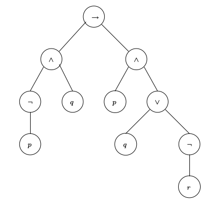

Linguagem da Lógica proposicional - Formalização
Contato
- Jean Paulo Martins (jeanmartins utfpr edu br)
- Sala 105, Bloco S (UTFPR - Campus Pato Branco)
Conteúdo
A linguagem da lógica proposicional
A definição da linguagem da lógica proposicional é semelhante à definição de outras linguagens, como por exemplo, a língua portuguesa. Define-se, inicialmente, o conjunto de símbolos disponíveis na linguagem: na língua portuguesa podemos definir
A seguir temos as regras gramaticais que são utilizadas na construção de palavras e sentenças. Em linguagem natural, as palavras não são, necessariamente, originadas a partir de regras bem definidas. Em uma linguagem formal, por outro lado, toda palavra ou sentença deve ser gerada pela aplicação de alguma regra gramatical.
Na linguagem da lógica proposicional, podemos então apenas dizer que seu alfabeto será composto por um conjunto de proposições atômicas: $p, q, r,\dots$ ou $p_1, p_2, p_3\dots$ e um o conjunto de conectivos lógicos: $\neg,\land,\lor,\to,(,)$. Portanto, se designarmos o alfabeto por $\sigma$, teríamos:
No entanto, logo percebemos que somente o alfabeto não é suficiente para garantir “palavras” válidas na lógica proposicional, visto que algumas strings compostas por símbolos em $\Sigma$, não são bem formuladas, isto é, não fazem sentido. Veja o exemplo abaixo:
Deste modo, para a formalização da linguagem da lógica proposicional, além de definirmos os símbolos do alfabeto da lógica proposicional, temos que definir as regras de formação das fórmulas bem formuladas (well-formed-formulas). Nessas condições, podemos dizer que uma fórmula é bem formulada se ela pode ser construída a partir da aplicação das regras de construção.
Regras de construção
- átomo: Toda proposição atômica $p, q, r, \dots, p_1, p_2, \dots$ é uma fórmula bem formulada.
- $\neg$: Se $\phi$ é uma fórmula bem formulada, então $(\neg\phi)$ também é.
- $\land$: Se $\phi$ e $\psi$ são fórmulas bem formuladas, então $(\phi\land\psi)$ também é.
- $\lor$: Se $\phi$ e $\psi$ são fórmulas bem formuladas, então $(\phi\lor\psi)$ também é.
- $\to$: Se $\phi$ e $\psi$ são fórmulas bem formuladas, então $(\phi\to\psi)$ também é.
- $\leftrightarrow$: Se $\phi$ e $\psi$ são fórmulas bem formuladas, então $(\phi\leftrightarrow\psi)$ também é.
Observe que os parênteses são parte das fórmulas bem formuladas. Consideraremos então, que qualquer concatenação de símbolos de $\Sigma$ forma uma fórmula apenas se a string puder ser gerada pela aplicação sucessiva das regras acima.
Árvores de análise
Até então descrevemos características obrigatórias de fórmulas bem formuladas (sintaticamente corretas). Essas fórmulas são aquelas que compõem a linguagem da lógica proposicional. No entanto, nada foi dito quanto a verificação dessas fórmulas, ou seja, como saber se uma dada fórmula está bem formada? Considere o caso

Tamanho de fórmulas
Seja $\phi$ uma fórmula da lógica proposicional. O tamanho (ou comprimento) de $\phi$ é definido pelas regras:
- átomo: Toda proposição atômica tem tamanho $|\phi|=1$.
- $\neg\phi$: tem tamanho $|\neg\phi| = 1 + |\phi|$.
- $|\phi\land\psi| = |\phi| + 1 + |\psi|$
- $|\phi\lor\psi| = |\phi| + 1 + |\psi|$
- $|\phi\to\psi| = |\phi| + 1 + |\psi|$
- $|\phi\leftrightarrow\psi| = |\phi| + 1 + |\psi|$
Subfórmulas
Toda subárvore de uma árvore de análise é uma subfórmula.
Exercícios
Dadas as fórmulas a seguir, construa suas árvores de análise:
Para cada uma das fórmulas, construa suas árvores de análise e liste todas subfórmulas.
Referências
Seção 1.3: Pgs. 25-28, Logica - Huth & Ryan (PDF).